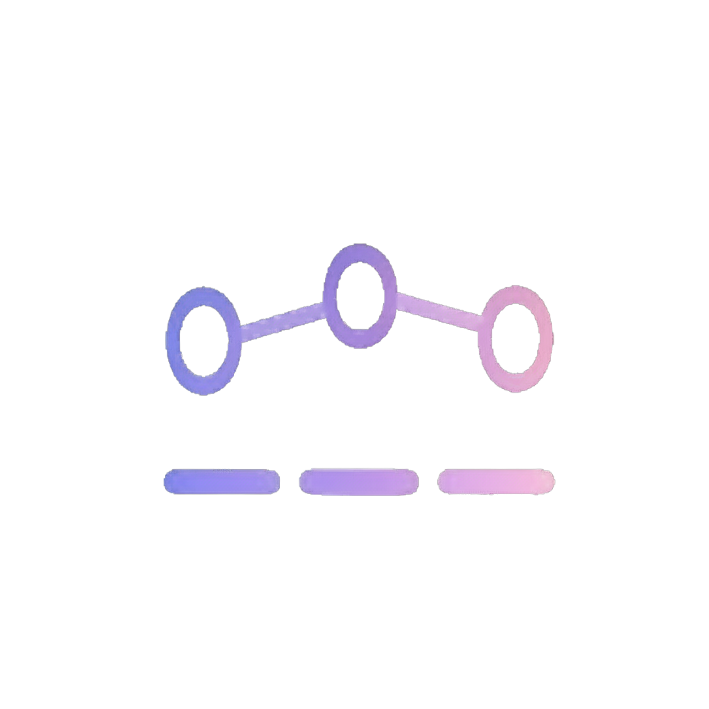
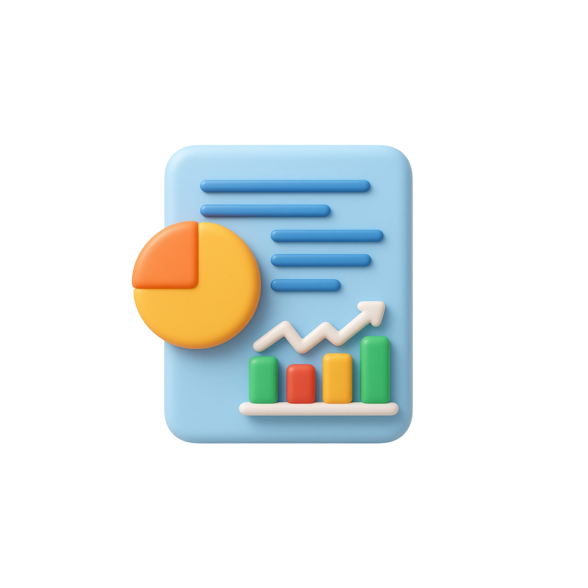
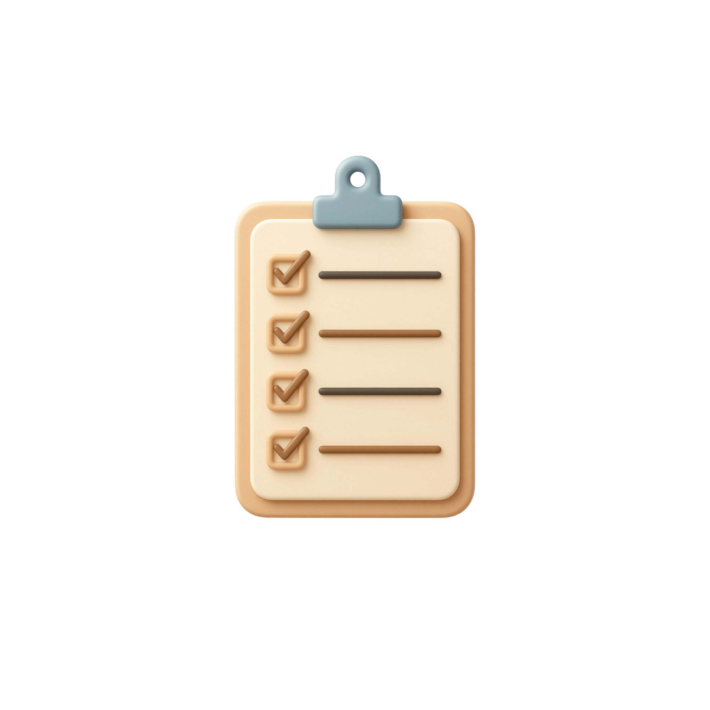

SmartMom adalah platform digital yang membantu orang tua memantau tumbuh kembang anak usia 0–5 tahun secara praktis. Dengan analisis sederhana, pengingat otomatis, dan panduan edukatif, SmartMom membantu Moms mengambil keputusan yang tepat untuk mendukung perkembangan anak.

Pantau perkembangan anak berdasarkan usia agar Moms tahu apakah si kecil berkembang sesuai milestone.
Tandai setiap pencapaian anak untuk memantau progres secara lebih terarah dan konsisten.
Dapatkan panduan praktis untuk mendukung tumbuh kembang anak.

Banyak orang tua kesulitan mengetahui apakah pertumbuhan anak sudah sesuai standar, sehingga keterlambatan sering tidak terdeteksi.
SmartMom membantu memantau perkembangan anak melalui analisis sederhana, pengingat rutin, dan panduan yang mudah dipahami.
Analisis menggunakan acuan WHO dan Kemenkes, sehingga hasil lebih terpercaya.

Membantu orang tua mengambil keputusan lebih cepat dan mendukung tumbuh kembang anak secara optimal.
Berikut beberapa pertanyaan umum seputar penggunaan SmartMom.